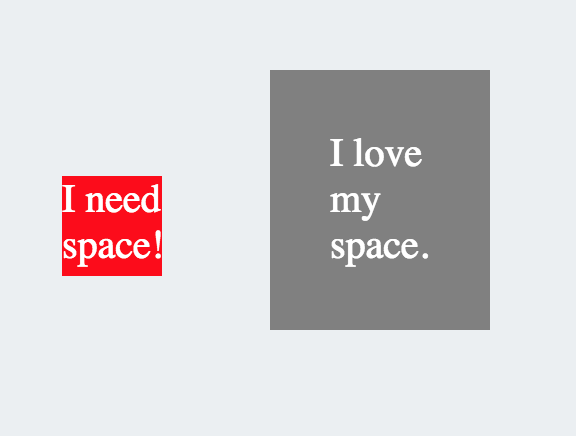
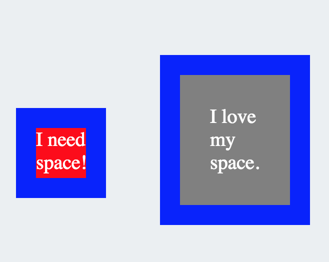

Sometimes, you actually have to think inside the box...
April 17, 2015
I'm going talk a bit about the box model in HTML/CSS. Understanding the box model is probably one of the most important concepts to understand when designing a website.
A lot of HTML objects can be thought of as boxes. whenever you create an HTML tag, you're essentially creating a box and trapping the item inside the box. Understanding the box model will help you a lot when you get frustrated trying to move your elements around. The picture below illustrates the box model:

An HTML element essentially has 3 layers of protection around it. The padding, border, and margin.
Padding
The padding is the first layer of protection of the element. It protects an element from hitting the walls of the box. As you can see below, these two elements were not treated equally. One was given enough space(padding), but the other was not.

Border
The border is basically the frame of the object. Each HTML element has a border property, and the border property can be specified for the top, right, bottom and left. You can give an element any border you wish. You can choose to give it only a top border if you want. Also, there are several styles available for the border. The one shown below is solid, but there are several others such as dashed, and dotted.
Margin
The last important layer is the Margin. This is an invisible space around the box which can be used to prevent it from colliding with other objects. In the boxes shown above, the space between the two objects was cause by putting a margin around them. Every object can be given a margin property and the margin can be specified for top, right, bottom and left. Apart from putting spaces around the element, the margin can be a very useful tool. If you understand how to manipulate it, you can use it to move you elements around your page.
This is just an overview to help understand the box model. For some more information about the box model, click here